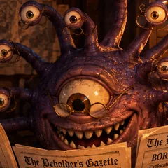

"Truth is Subjective, But Entertainment is Eternal"
Founded in 1492 DR, The Beholder's Gazette is the realm's premier source for satirical news, DM tools, and everything in between. We see all truths — especially the ones we made up.
Our mission is simple: provide Dungeon Masters with high-quality, free tools while keeping everyone entertained. Because let's face it, if the DM isn't having fun, nobody is.
The Gazette is made by Ashforge Studio, a solo TTRPG studio that writes D&D 5e supplements and takes commissions for adventures, lore, and stat blocks.
D&D-themed parody of real-world events
270+ items with fluctuating prices
Full characters with secrets & quests
DMG-compliant treasure tables
All 319 SRD spells, searchable
SRD characters, levels 1 to 20
27 points, the array, or 4d6
Traits, ideals, bonds, and secrets
Prerequisites, proficiencies, and slots
Prepare spells and print cut-out cards
Attacks, features, and magic items to cut out
Hit chance and damage per round
HP, slots, resources, rests, and gear at the table
Sessions, quests, people, places, loot
All 334 SRD monsters with full stat blocks
Homebrew stat blocks with an automatic CR estimate
Conditions, cover, light, travel, DCs, and lifestyles on one printable page
Wanted posters, letters, bounty boards, and price lists to print
300+ quest hooks & flavor text
Headline, rumor, NPC, loot & shop on one page
A whole adventure in three acts, ready to print
A villain, a front, and chapters that climb the levels
Shops priced live from the market
Your own screen of cards: rules, dice, initiative, party, clocks, tables, notes, and stat blocks, with a player view and a print
Names, taverns, side quests, travel, your party, encounters, dice, your own random tables, initiative (with a player view), progress clocks, loot splits, and downtime
Calendars, a pantheon of gods, the factions that run a city, the history behind it, whole towns, family trees, mapped dungeons, a continent map, your own maps to pin, and a web of how it all connects
Draw your own battle maps on a 5-foot grid, then run the fight on them: tokens, fog of war, and a Player View for the TV
Paint your own fantasy world: land, coasts, and terrain, with towns, castles, mountains, and sea monsters dragged into place, borders, roads, rivers, and labels in the old fonts
Every tool on this site is designed with one goal: make your D&D sessions better. Here's what we offer:
2d6+3, 4d6kh3) with advantage or disadvantage and a roll history, write your own random tables (paste a list or a table with die ranges; an entry can roll another of your tables or roll dice, and a link shares a table with the tables it rolls), run combat with an initiative tracker for HP and conditions that survives a refresh (with a 📺 player view for a TV or second screen that shows the turn order, conditions, and health as Healthy, Bloodied, or Down, and keeps monster names hidden until you reveal them), track looming threats on progress clocks of 4, 6, 8, or 12 segments, and split the party's coins evenly in gold, silver, and copper (the Loot and Session Kit pages send their treasure straight to it). Between adventures, the downtime tracker prices each character's lifestyle by the week and works out crafting progress, working for pay, research, recuperation, and (by house rule) carousing. Enter your party once (name, class, level, AC, HP, passive Perception) and the encounter builder, side quests, coin splits, downtime, and the Worldbuilder's dungeons start from it, while initiative adds the whole party with one button. A floating 🎲 button on every tool page rolls dice without leaving the page.Behind every great publication is a team of dedicated (and slightly unhinged) individuals.

Editor-in-Chief
Sees all truths. Especially the convenient ones.
Lead Scribe
Writes the news. Sometimes makes it up.
Investigative Bard
Specializes in political scandals and zoning violations.
Valued Reader
Without you, we're just shouting into the void.
Yes! All tools are completely free. We accept voluntary donations via Patreon to keep the servers running and the bards fed.
Absolutely! That's what it's for. Generate NPCs, loot, rumors, and spell lookups to your heart's content.
Base prices follow the standard 5e price lists. Every 15 minutes they drift by up to 15%, and every visitor sees the same board, so your whole table can shop from the same numbers. Use it as a guide, not gospel.
Currently, contributions are session-only. We're working on a submission system for the future!
Because D&D is supposed to be fun. If we can make you laugh while you prepare your session, we've done our job. The one exception is Across the Multiverse, our desk for real tabletop RPG news, which runs straight and under real names.
This work includes material taken from the System Reference Document 5.1 ("SRD 5.1") by Wizards of the Coast LLC, available at dnd.wizards.com/resources/systems-reference-document. The SRD 5.1 is licensed under the Creative Commons Attribution 4.0 International License.
The DM Toolbox's encounter difficulty also uses the XP Budget per Character table from the System Reference Document 5.2 ("SRD 5.2") by Wizards of the Coast LLC, available at dnd.wizards.com/resources/systems-reference-document. The SRD 5.2 is licensed under the Creative Commons Attribution 4.0 International License.
That covers the rules summed up on the Rules Quick Reference page and the DM Screen's rules cards, the spell text in the Spellbook, the races, classes, and features summed up in the Character Builder (and the point costs and racial bonuses in the Point Buy Calculator, the multiclassing rules in the Multiclass Calculator, and the spellcasting rules and spell lists in the Spell Planner, and the attack and critical hit rules in the Attack Calculator), the magic item text in the Vault of Wonders, the DM Session Kit, and the Feature & Item Cards, and the travel pace rules, tavern food, drink, and lodging prices, lifestyle costs and downtime activities, condition names, coin values, and monster stat blocks in the Bestiary, the Monster Maker, the DM Screen, and the DM Toolbox, and the ability checks at the Worldbuilder's festivals, the cleric domain names in its pantheons, and the trap DCs and damage in its dungeons. Magic items outside the SRD are listed by name only.
The Beholder's Gazette is unofficial fan content. It is not approved, endorsed, or affiliated with Wizards of the Coast.
Have questions, suggestions, or want to report a bug? We'd love to hear from you!
Messages are delivered privately through Google Forms. See our privacy page.